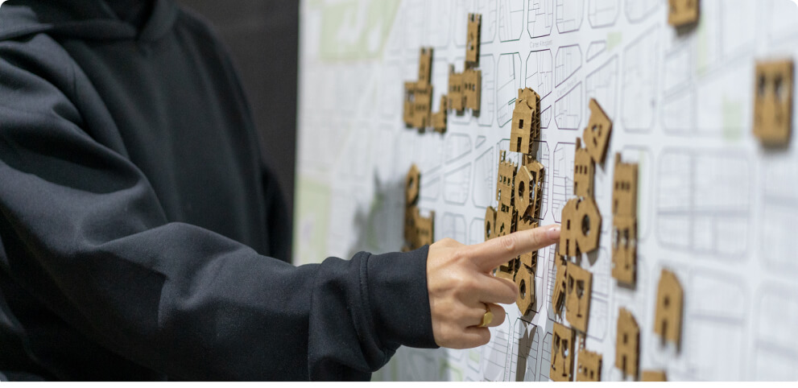

Master in Design for Distributed Innovation
The Master in Design for Distributed Innovation (MDDI) is organised by Fab City Foundation and the Institute for Advanced Architecture of Catalonia. It is co-delivered by Fab Lab Barcelona at IAAC, local nodes of the distributed campus, and is supported by the global Fab Lab Network.
Basic Information
Presentation
The Master in Design for Distributed Innovation (MDDI) is a distributed learning program focused on the intersection of design, technology, ecosystems and communities to improve interspecies wellbeing. It connects a global community of changemakers with local innovators in order to address complex challenges. Combining online and hands-on learning, it supports the development of the social and technical skills needed to develop projects for positive impact in local communities that aim for global transformational change.
The MDDI presents the next frontier in global impact education. As a distributed program, students will experience a mix of online seminars with in-person mentorships and the production of physical prototypes in their local nodes. The program is structured in three modules of one trimester each, plus a final project implementation. Each module focuses on different levels of the Fab City Full Stack, across three tracks: Ecosystems, Communities and Technology.
Why distributed design and innovation?
To transition to a new production paradigm, in which extractive industrial practices are replaced by regenerative global knowledge networks, design must take on a new role. The same industrial model that has caused a constellation of planetary crises is also the context in which design became a revered discipline. Design education has been based on these competitive, colonial foundations and globalised ideals of the past. A shift is needed towards how we learn to, from and with design by imagining new processes to reconfigure the relationship between humans and the natural ecosystems around them; methodologies and approaches rethought to learn and understand how to design from and for diverse contexts.
The Distributed Design and Innovation Approach
Over the last two centuries, we have refined technology and infrastructure for the movement of atoms on a planetary scale in the form of raw materials, using energy sources associated with fossil fuels; we have also transformed these materials into consumer goods, thanks to industrial processes that generate high emissions and an enormous amount of waste. This economic model, which is based on infinite growth through the use of supposedly infinite natural resources, gives precedence to economic benefits over caring for biological and social systems. In reality, the labour, energy and raw materials associated with most of the products we consume are not cheap as they are advertised, because their environmental and social impacts are not gauged within the real costs of any product or company. Externalities are hidden, charged to local communities and ecosystems that sustain the global supply chains.
The Fab City global initiative – conceived between Barcelona and Boston – proposes a change in our production paradigm to a new one in which atoms stop travelling thousands of kilometres to get to our hands and stomachs; on the contrary, they mostly circulate locally. In Fab Cities, bits of information travel great distances around the planet, thanks to the digital revolution in telecommunications and computation, and emerging digital manufacturing technologies. Digital fabrication will become the key to developing over the upcoming decades an urban model focused on the development of locally productive cities and bioregions that are globally connected.
MDDI combines the internationality of the Fab City Foundation with the pedagogical expertise of Fab Lab Barcelona and the Institute of Advanced Architecture of Catalonia. With the support of the Fab Lab Network, the program delivers the next frontier in global education: project driven, context aware, and hands on. The distributed learning model allows scholars to learn and practice in their own context, whilst giving access to lectures, experiences and knowledge online, delivered by a global network of experts, institutions and peers. By establishing projects within their own communities, MDDI students are part of personal and real-world transformation, while being part of a global network of changemakers who are navigating complex systems in order to bring about a paradigm shift in our current socio-economic model. The program follows ethical principles that guide both the academic curriculum and extended impact of the program:
{{project.name}}
{{project.text}}
MDDI is designed using the The Fab City Full Stack multiscale approach outlined by the Fab City global initiative. This layered approach forms the basis of the program, framing the methodological approach to conceptualising transformational change. The full stack is a working taxonomy developed by the Fab City Foundation to organise and implement projects at different scales. Composed of complementary and non-linear layers for cities, regions and towns, to make the Fab City implementation in a multiscalar and ecosystemic approach operational. Each interconnected layer is a space of practice and deployment, scaling Fab Lab experiences to a bioregional level in a systemic approach.
International Faculty and Guests
MDDI program has been designed by researchers, practitioners and thought-leaders from Fab City Foundation, Fab Lab Barcelona, IAAC and the global Fab Lab Network ecosystems, gathering a unique and internationally recognised team.
Directors
{% for group in site.data.people-mddi.groups %} {% if group.group-id == "directors" %}{{person.name}}
Faculty
{% for group in site.data.people-mddi.groups %} {% if group.group-id == "sub-directors" %}{{person.name}}
Student Profile
As a MDDI candidate, participants might be already working in the public or private sector, academic institutions or, may come from an entrepreneurial background having started their own business related to planetary restoration. The program aims to become a platform to boost and accelerate students’ capabilities to produce change in their own contexts, and to accelerate the transition towards a productive and sustainable model of production and consumption in their communities.
Creative industries & makers
Designers, Makers, Architects, Urbanists and Artists who want to expand their knowledge by incorporating new design methodologies, technological skills and theoretical arguments to deploy in their personal and professional projects sustainably.Entrepreneurs, social Innovators
Professionals from all areas who wish to transform their ideas into social innovations or start their sustainable entrepreneurship by expanding their technical skills and design methods to become agents of positive change.Government employees &NGOs
Professionals who are already making changes from inside in public services or non- governmental-organisations and want to accelerate the impact of policy by adopting an innovation culture.Professional Opportunities

As a MDDI candidate, participants might be already working in the public or private sector, academic institutions or, may come from an entrepreneurial background having started their own business related to planetary restoration. The program aims to become a platform to boost and accelerate students’ capabilities to produce change in their own contexts, and to accelerate the transition towards a productive and sustainable model of production and consumption in their communities.
Competences
Leading Partners


Methodology

FAQs
What is Distributed Education?
Distributed Education is a blended methodology that mixes online and in-person education formats that use physically distributed and digitally interconnected global infrastructure nodes, like Fab Labs, that become classrooms. Students practice synchronously and asynchronously, creating a global and distributed campus.Whilst the approach is similar to distance education, it takes the concept a step further, distributing the development and circulation of content between the nodes as well.What if there is no node in my city?
You can fill in the form and let us know where you are based. The MDDI coordination team will get in touch with you to see if it's possible to connect you to a node or Fab Lab close to you. If for any reason we can’t connect your city to the program, we’ll endeavour to help you to join your closest existing node.How will the local knowledge of my community contribute to the program?
Each MDDI node offers students access to the local community and networks to deploy their projects in a bottom-up approach. This is important in reaching the goals of the Fab City global initiative. It all starts with building ecosystems within cities and developing sustainable initiatives that will shape the new global production paradigm.Do I need to have ‘Fab Lab’ skills to apply?
We don’t require any specific technical skills. We look for diverse student profiles, with different backgrounds and expertise. MDDI is designed for everyone interested in design, sustainability, technologies, ecologies and cities.Do I need to have a project to apply?
Because our student profile includes different backgrounds and disciplines, every application will be evaluated under its individual merits. To apply you only need a professional diploma, a letter of interest and a portfolio or a project-based CV.What Master will I receive when I graduate?
You will receive a Master in Design for Distributed Innovation degree accredited by the Polytechnic University of Catalonia* with 60 European Credit Transfer and Accumulation System (ECTS).*under accreditation process.